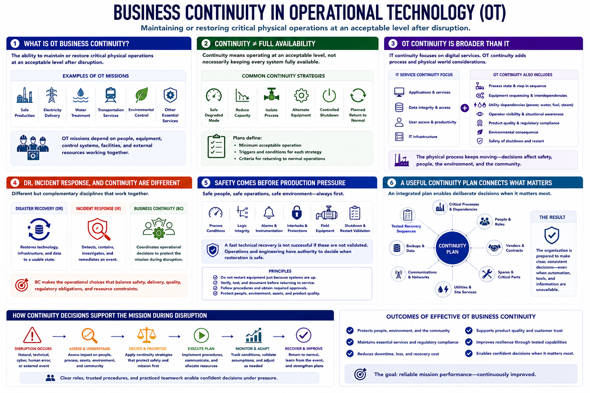

What Business Continuity Means in OT
Connecting to LMS... Progress: in progress

Narration
Business continuity in operational technology is the ability to maintain or restore critical physical operations at an acceptable level after disruption. The mission may be safe production, electricity delivery, water treatment, transportation, environmental control, or another service that depends on people, equipment, and control systems working together.
Continuity does not always mean keeping every system fully available. A site may shift to a safe degraded mode, reduce capacity, isolate a process, use alternate equipment, or perform a controlled shutdown. Plans define the minimum acceptable operation and the conditions for returning to normal.
IT service continuity often focuses on restoring applications, data, and user access. OT continuity includes those concerns but also considers process state, equipment sequencing, utility dependencies, operator visibility, product quality, environmental consequence, and the safety of shutdown and restart.
Disaster recovery and incident response support continuity but are not identical to it. Recovery restores technology and data. Incident response contains and investigates an event. Continuity coordinates the broader operational choices that protect the mission while those activities occur.
Safety comes before production pressure. A fast technical recovery is not successful if process conditions, logic integrity, alarms, interlocks, or field equipment have not been validated. Operations and engineering need authority to decide when restoration is safe.
A useful continuity plan connects critical processes to assets, people, vendors, spares, utilities, communications, backups, fallback procedures, and tested recovery sequences. It prepares the organization to make deliberate decisions when normal automation and information are unavailable.